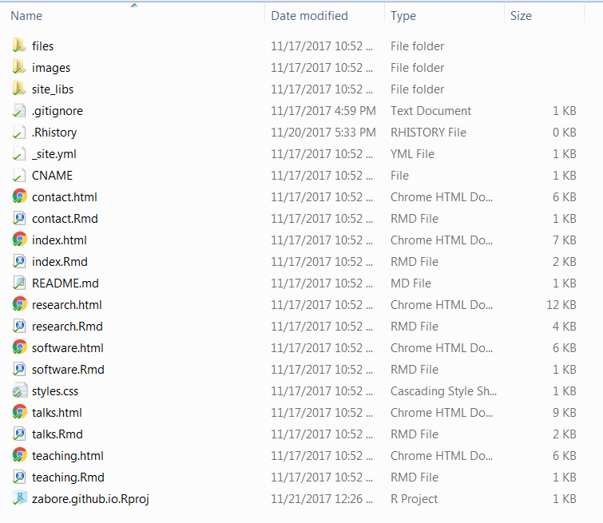
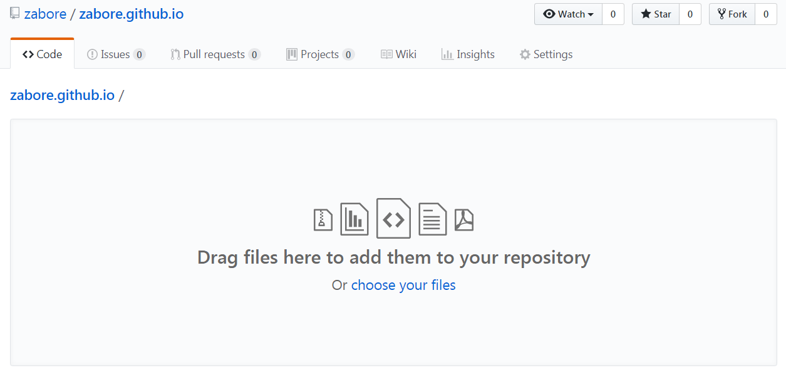
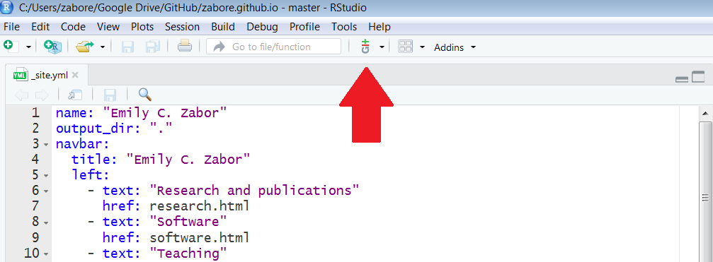
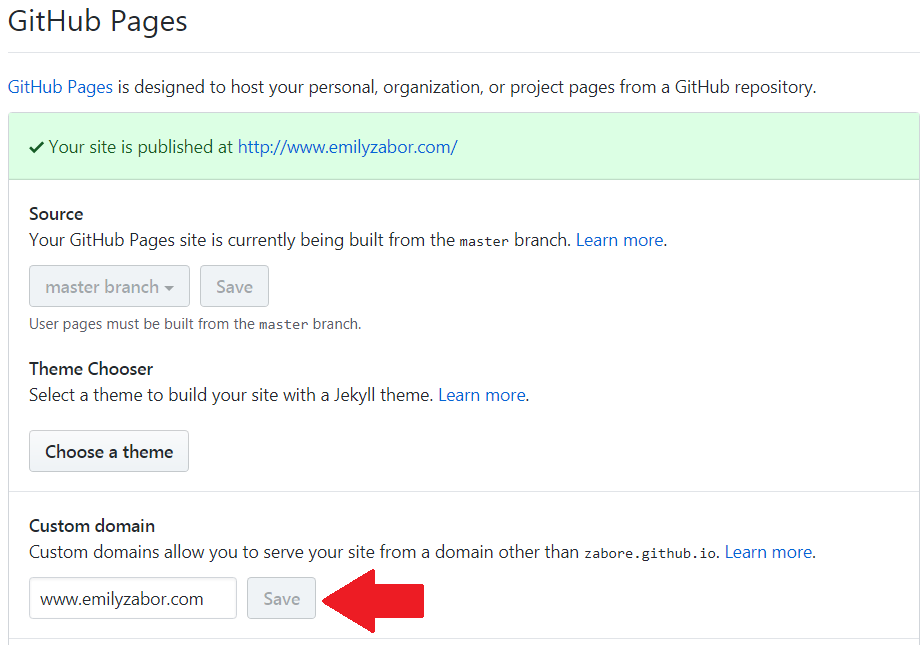
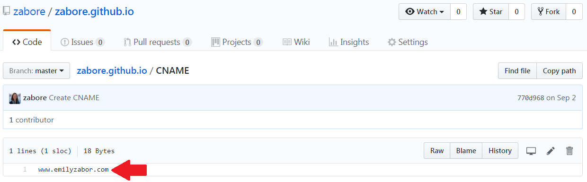
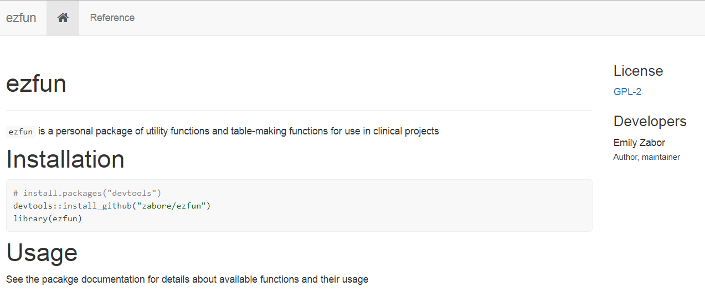
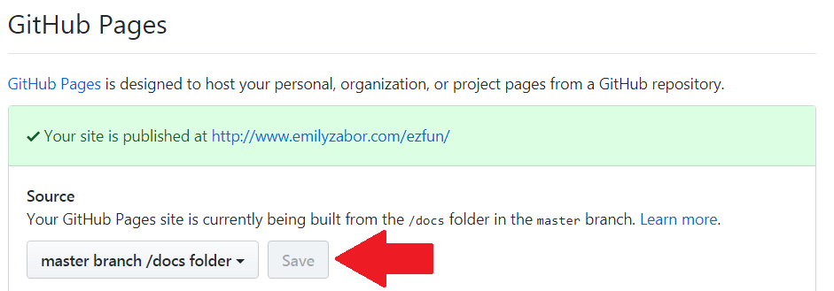
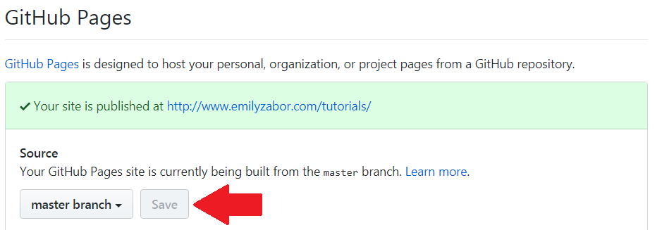
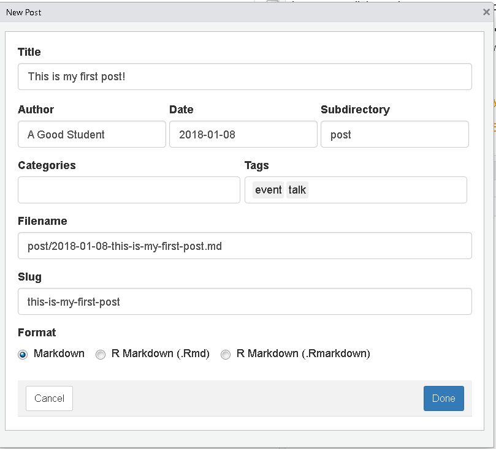
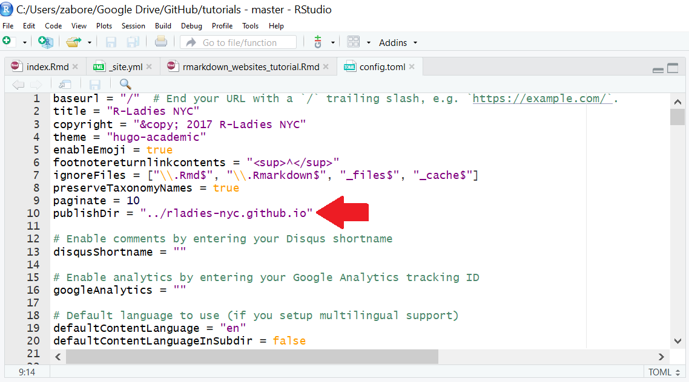

Deze tutorial is van Emily C. Zabor die ik heb bewerkt, vooral ook om te zien of ik mijn eigen website kan maken. Deze tutorial laat je zien hoe je een website maakt met gebruik van R, RMarkdown en GitHub.
Deze tutorial presenteerde zij voor het eerst op R Gebruikers Groep Bijeenkomst op 23 Januari 2018 op het Memorial Sloan Kettering Cancer Center Department van Epidemiologie and Biostatistiek.
Deze versie ververste en presenteerde zij op de R Dames NYC Bijeenkomst op 15 Februarie 2018.
Typen websites
De belangrijkste typen websites die je zou willen maken zijn:
- Persoonlijke websites
- Websites om een pakket te presenteren
- Project websites
- Blogs
De basis van R Markdown website
Wat jij minimaal nodig hebt voor een R Markdown website zijn:
index.Rmd: bevat de inhoud van de homepage van de website_site.yml: bevat de metadata voor de website
Een basis voorbeeld voor een _site.yml voor een website met twee pagina’s kan er zo uitzien:
And a basic index.Rmd to create the Home page:
Hier vind je een overzicht van de basis van R Markdown website hier.
GitHub
Deze tutorial left de nadruk op het hosten van websites via GitHub. Hosten van websites via GitHub is gratis.
Als je nog geen GitHub account hebt, teken dan op via https://github.com/join?source=header-home met username YOUR_GH_NAME. Ik zal naar deze username, YOUR_GH_NAME, als “jouw GitHub username” refereren in deze hele tutorial.
Er zijn andere mogelijkheden om jouw website gratis te hosten. Een ander populaire keuze is Netlify.
Persoonlijke websites
Een voorbeeld van een homepage van Emily Zobore’s website is:
Er zijn twee belangrijke stappen om een persoonlijke website te maken die op GitHub wordt gehost:
- GitHub setup
- Lokale setup
GitHub setup
- Creëer een GitHub repository (“repo”) genaamd YOUR_GH_NAME.github.io, waar YOUR_GH_NAME jouw GitHub username is.
- Initialiseer het met een README
- Voor hen die met GitHub weinig ervaring hebben: dit kan het proces van klonen van repository en daarmee het afstemmen met de ‘master branch’ vergemakkelijken.
Lokale setup
- Kloon deze remote repository op een locale directory met dezelfde naam, YOUR_GH_NAME.github.io
- Voeg een R Project toe aan deze directory
- Maak een
_site.ymlen eenindex.Rmdfile in jouw nieuwe directory
Waarom heb ik een R Project nodig?
Het R Project is gemakkelijk omdat RStudio jouw project als een website zal herkennen en zorgt voor de goede gereedschappen die je nodig hebt.
Opgelet: Nadat je een R Project met de goede files hebt gemaakt, kan het zijn dat je het project moet sluiten en heropenen voordat R het herkent als een website en de goede gereedschappen toont.
Creëer inhoud
Pas de _site.yml file aan door de metadata te veranderen en het thema van jouw website. Kijk maar eens naar de Jekyll thema’s hier en speel wat met de verschillende opties. Thema’s zijn makkelijk te veranderen, zelfs nadat je de inhoud hebt toegevoegd.
Bijvoorbeeld de _site.yml voor de persoonlijke website van Emily ziet er zo uit:
Pas aan en creëer .Rmd files met de inhoud van jouw website, die er html-pagina’s voor jouw website van maken als jij ze ‘knit’.
De index.Rmd file voor de homepage van Emily’s persoonlijke website ziet er zo uit:
Als je een keer de inhoud hebt geschreven en de lay-out hebt opgezet, zoek dan de Build tab in RStudio op en selecteer “Build Website”:

Nu heeft jouw local directory alle files die nodig zijn om jouw website te maken:

De website uitzetten
Basis benadering:
- Selecteer “Upload files” van de hoofpagina pagina van jouw GitHub repository:
- En sleep eenvoudig of selecteer de files van jouw locale repository:

Geavanceerde benadering (aangeraden):
- gebruik Git als cliënt of van binnenuit RStudio (een andere goede reden om een R Project! te gebruiken)

- Maar dit is geen Git/GitHub tutorial. Als je meer wilt leren over Git/GitHub, ik raad jou aan dit te doen, dan is dit een goede bron om mee te beginnen: http://happygitwithr.com/
Aangepaste domeinen
Het standaardadres om jouw wite te hosten is http://YOUR_GH_NAME.github.io, maar je kunt jouw domeinnaam ook aanpassen. Dan zijn er twee stappen te zetten:
- In jouw GitHub repository YOUR_GH_NAME.github.io, ga je naar Settings > GitHub pages. Typ jouw domeinnaam in de box onder Custom domain en sla het op (Save).

- Voeg een CNAME file toe aan jouw GitHub repository YOUR_GH_NAME.github.io.
Het zal als volgt in jouw repository verschijnen:
And inside the file you will simply have your domain name:

Pakket websites
Een voorbeeld hiervan is deze website van Emily’s R-pakket ezfun:

Gebruik Hadley Wickham’s goede pakket pkgdown om makkelijk een website van jouw pakket te maken die op GitHub wordt gehost. Details over pkgdown kun je hier vinden de pkgdown website, die ook met inzet van pkgdown is gemaakt.
Dit veronderstelt wel dat je al een R-pakket met een locale directory hebt en een GitHub repository.
From within your package directory run:
Dit zal een folder toevoegen met de naam
docsbinnen de locale directory voor jouw pakketUpload/push deze veranderingen in de GitHub repository voor jouw pakket
In the GitHub repository voor jouw pakket ga je naar Settings > GitHub pages. Selecteer “master branch/docs folder” als de bron en sla op (Save)

De persoonlijke pagina zal worden toegevoegd aan jouw persoonlijke website en aan YOUR_GH_NAME.github.io/repo_name
De homepage kun je via README file op jouw repository binnenhalen
De referentiepagina van de site omvat alle functies met hun beschrijving
Elke functie klikt door naar de hulppagina ervan,
En in bepaalde gevallen ook naar vignettes met goede informatie
En dan ben je klaar, zo makkelijk als dat.
Project websites
Ook als je geen pakket maakt kun je nog wel een repository maken. Emily Zabore heeft bijvoorbeeld een pagina op haar website die linkt naar de repository waarin deze tutorial is opgeslagen.
Lokale setup
Vanuit de lokale directory van het project waar het jou om te doen is:
- Creëer een
_site.ymlenindex.Rmdfile in jouw nieuwe directory - Pas deze files met jouw inhoud en layout, net zoals bij persoonlijke websites
GitHub setup
Upload/push deze nieuwe files in de GitHub repository voor jouw project
Ga naar GitHub pagina’s voor de repository en ga naar Settings > GitHub Pages, waar je de “master branch” folder selecteert en je drukt op Save

Blogs
R Markdown websites zijn makkelijk te maken en uit te zetten, maar het wordt lastiger als je het voortdurend moet verversen of veranderingen moet aanbrengen, zoals dat het geval is bij een blog. Gelukkig, het R-pakket blogdown bestaat juist voor dit doel. blogdown is een R pakket dat jou in staat stelt statistische websites te makenthat allows you to create static websites, wat betekent dat de uitgezette versie van de website alleen bestaat uit JavaScript, HTML, CSS en plaatjes. Gelukkig is het blogdown pakket zo opgezet dat je over al die zaken niets af hoeft te weten om toch nog een mooie website te maken voor jouw blog, met de ondersteuning van Hugo.
Voor de beste referentie van blogdown website, kijk naar dun blogdown boekje.
Emily Zabore heeft geen persoonlijk blog, maar wel een website/blog gebouwd rond deze bijeenkomsten in New York R-Ladies NYC en dat is hier als voorbeeld toegevoegd.
Setup
De eerste drie stappen zijn hetzelfde als het maken van een basis R Markdown website:
- Creëer een GitHub repository met de naam YOUR_GH_NAME.github.io, waar YOUR_GH_NAME jouw GitHub gebruikersnaam is, geïnistialiseerd met een README file
- Kloon deze GitHub repo op een lokale directory met dezelfde naam
- Voeg een R Project aan jouw lokale directory toe
Dan beginnen we met blogdown.
- Installeer
blogdownen Hugo
Kies een thema en vind de link naar de thema’s van de GitHub repository. In dit geval zijn de thema’s niet zo makkelijk te wisselen als binnen de basis R Markdown website, dus kies het thema zorgvuldig.
Genereer een nieuwe site binnen jouw project sessie. De optie
theme_example = TRUEzal voor de files van een voorbeeldsite zorgen die je op basis van wat je nodig hebt kunt aanpassen.. “user/repo” refereert naar de GitHub gebruikers naam (user) en de GitHub repository (repo) voor jouw geselecteerde thema.
Dit zal alles van de filestructuur van jouw nieuwe blog genereren.
Nadat je dit hebt afgerond, moet je sluiten en dan het project weer heropenen. Als je heropent, zal RStudio het project als een website herkennen.
Het aanpassen van het beeld
Veranderingen voer je in de config.toml file door (hetzelfde als de _site.yml die we bij de R Markdown websites tegenkwamen); zo verander je de layout en het beeld van jouw website. De beschikbare kenmerken in de config.toml zullen verschillend zijn afhankelijk van jouw thema en de meeste themavoorbeelden hebben een eigen config.toml die je als template kunt gebruiken.
Als je een keer de kenmerken van jouw website hebt aangepast, klik dan op RStudio’s “Serve Site” om de site lokaal al te bekijken.

Een nieuwe blog post schrijven
Er zijn verschillende manieren om een nieuwe blogpost op jouw site te schrijven, maar het is het makkelijkste om dat via “New Post” in RStudio te doen:
Dit opent een pop-up waar je de meta-data voor a nieuwe post kunt plaatsen:
In aanvulling op Titel, Auteur en Datum van de post, kun je aanvullend ook categorieën creëren, die jouw post in folders organiseren en kun je tags aan de posts toevoegen, waarmee ze te zoeken zijn binnen de inhoud van jouw website. Wees er wel van bewust dat het functioneren van deze kenmerken varieert per thema. Bepaalde blogs kunnen ook in toekomst worden geplaatst.
Zie onderaan dat je ook kunt kiezen tussen een regulier markdown (.md) of R markdown (.Rmd) file. .Rmd files moeten worden gerenderd voordat ze html pagina’s genereren. Dus het is het beste dit te gebruiken waar ook een R code in zit.
Een file naam en een ‘slug’ worden automatisch genereerd gebaseerd op de andere metadata. De ‘slug’ is een URL-vriendelijke titel van jouw post.

Presenteren
Een blogdown site is een beetje lastig te bouwen en te presenteren via GitHub vergeleken met een reguliere R Markdown website en vergeleken met wat hierboven is beschreven.
Probleem 1: Omdat het een statistische site betreft, de files genereren automatisch on line in een aparte subdirectory onder de naam public binnen jouw lokale directory. Echter, dit veroorzaakt problemen met het hosten (presenteren) van GitHub omdat de files dan in de lokale YOUR_GH_NAME.github.io directory moeten zitten.
De oplossing:
- Hou aparte directories voor de bron files (deze directory bijvoorbeeld “source”, bron noemen) en voor de statische files (de directory YOUR_GH_NAME.github.io) die gegenereerd worden. De “source” folder is waar your R project en
config.tomlfiles zich bevinden.
- Gebruik in jouw
config.tomlde optiepublishDir =omblogdownte publiceren via de YOUR_GH_NAME.github.io folder. Dat is eenvoudiger dan de standaard manier op jouw lokale locatie.

Probleem 2: GitHub gebruikt standaard Jekyll met website inhoud en dat moet ongedaan worden gemaakt omdat blogdown sites met Hugo worden gebouwd.
Om dit op te lossne moet je een lege file toevoegen met de naam .nojekyll in jouw GitHub repo YOUR_GH_NAME.github.io, voordat je het publiseert.
Het pakket Distill
Mijn eigen blog Harrie’s hoekje maak ik met het pakket Distill. Om een blog te maken installeer je Distill. Dan maak je een new blog en gebruik je Distill Blog.
Dan worden er een project gemaakt met een aantal documenten: _site.yml
index.rmd
about.rmd
_posts/welcome/welcome.rmd
Vervolgens pas je de *_site.yml* aan op basis van hoe jouw blog eruit moet zien.
als je een post wilt creëren open je het programma (library(distill)) en je tikt in `create_post(“Hier de naam van de post”). Hier Distill vind je veel meer informatie hierover.Hier [Tensorflow)(https://blogs.rstudio.com/tensorflow/) vind je een ander voorbeeld hoe de blog er dan uit kan zien.
Met Distill kun je op dezelfde eenvoudige manier een website maken Distill-website. Nadat je het Distill hebt geinstalleerd en geopend (library(Distll)). Krijg je de volgende documenten _site.yml (om de website te configureren)
index.rmd (voor de homepage)
about.rmd (waar de website over gaat)
Verder werkt dit hetzelfde.
Aanvullende bronnen
Hieronder vind je de aanvullende bronnen en linken waar in deze tutorial naar wordt verwezen:
- http://rmarkdown.rstudio.com/rmarkdown_websites.html: an overview of R Markdown website basics
- http://jekyllthemes.org/: Jekyll themes for use with your R Markdown website
- http://happygitwithr.com/: an introduction to Git/GitHub
- http://pkgdown.r-lib.org/: Hadley Wickham’s
pkgdownwebsite - https://bookdown.org/yihui/blogdown/: Yihui Xie’s blogdown book
- https://themes.gohugo.io/: Hugo themes for use with your
blogdownwebsite